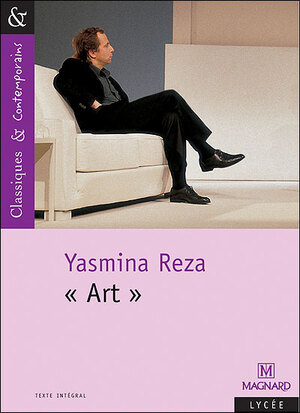

ART une pièce de théâtre de Yasmina Reza, publiée en 1994. Si je me souviens bien, c’est un livre que les premières (de mon lycée) devaient lire dans le cadre du bac de français. Ce que j’ai aimé de ce livre c’est très court déjà, et donc très rapide à lire. De plus, l'histoire est vraiment accrochante.

Cette piece met en scène trois personnges principaux qui sont amis et qui vont s’affronter sur un debat autour d’un tableau “un caré blanc sur un font blanc” que Serge vient d’acheter, ce dernier est l’un des personnages principaux. Il faut aussi savoir que le tableau fait référence à une œuvre de Kazimir Malevitch. Et on s'attache très rapidement aux personnages.
De plus, la pièce a été mise en scène pour la première fois en 1994 avec les acteurs, Pierre Vaneck dans le rôle de Marc, Fabrice Luchini: Serge et Pierre Arditi qui interprétera Yvan. Si tu es tenté(e) de regarder cette pièce, le lien est juste là ("Art" de Yasmina Reza - Pierre Arditi , Fabrice Luchini , Pierre Vaneck).
I’m not your negro de James Baldwin.

Un très un beau livre qui aborde du racisme, discrimination et retrace la lutte des Noires americains pour les droits civiques. Il faut savoir que James n’a jamais écrit ce livre, mais c’est Raoul Peck qui va créer cette œuvre à partir des mots originaux de James.
De plus, il a été adapté en documentaire en 2017. Tu peux le regarder sur Netflix (si tu en as bien sûr), ou sinon sur Youtube tu trouveras des extraits du documentaire plutôt intéressants.
Des souris et des hommes un petit roman de John Steinbeck publié en 1937. L’histoire se déroule dans les années 30, en pleine dépression économique aux Etats-unis. On suit donc l’histoire de deux amis, Lennie Small et George Milton avec des caractères opposés, parcourir tout le pays pour travailler dans des champs et trouver en quoi se sustenter pendant cette période.
L'histoire est vraiment intéressante et les personnages sont aussi attachants, dont principalement Lennie (selon moi), car on compatit très vite avec son personnage. Après l'histoire aborde aussi d’autres thématiques: l’amitié, du racisme à cette époque, la notion de sacrifice, l’amour… etc
Il a été aussi adapté au cinéma, mais il y a deux versions. La première version date de 1939 réalisé par Lewis Milestone et la deuxième date de 1992, et réalisé par Gary Sinise, ce dernier joue même le rôle de George Milton. Personnellement je préfère la deuxième version. (juste un petit avis perso)
Enfin, est un roman de Gaël FAYE. Un très beau livre, Il te fait passer par plusieurs émotions, tu passes de heureux(se) à triste. Sachant que l’histoire en elle-même est inspirée des faits réels.

L’histoire se déroule au Burundi (puis au Rwanda), dans les années 90, plus précisément en 1993, où on rencontre Gabriel, qui vit avec sa mère qui est Rwandaise et son père qui est Français ainsi que sa petite sœur. Il mène une vie normale et heureuse, toujours accompagné de ses amis. Mais tout va basculer, lorsqu' un genocide des Tutsis au Rwanda qui fera plonger tout le pays entier dans le chaos.
Il existe aussi une adaptation cinématographique qui est sortie en 2020, réalisée par Eric BARBIER et Co-scénarisé par lui-même, Gaël FAYE. Et j’ai eu la chance de le voir au cinéma.